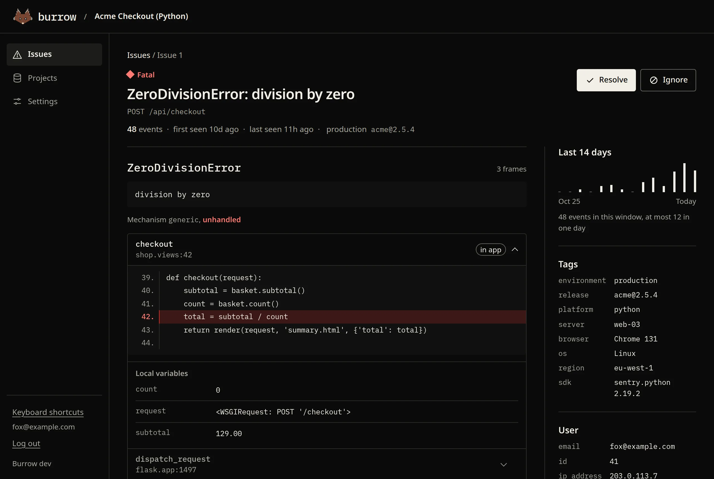
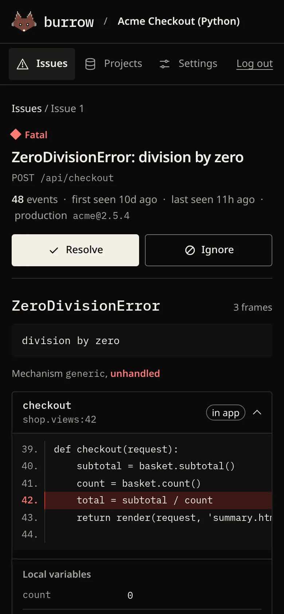

Your errors, your server.
Self-hosted error tracking in one ~14 MB binary and a SQLite file. No Redis, no Kafka, no ClickHouse.
docker compose up -d
Open source under the MIT license.
- Fatal ZeroDivisionError: division by zeroPOST /api/checkout 48
- Error TimeoutError: timed out after 3000mssrc/network/client.ts in request 52
- Error TypeError: Cannot read properties of undefined (reading 'total')src/cart/summary.ts in computeTotals 50
- Warning Possible EventEmitter memory leak detectednode:events in addListener 11
Events with the same exception and call path group into one issue, even when the message changes. A resolved issue that happens again reopens as a regression. Resolve one and watch.
Keep your SDK. Change one line.
Burrow works with the Sentry SDKs: it speaks their public ingestion protocol, so they send to it unchanged. Create a project, copy its DSN, and point your app at it.
- Envelope and legacy store endpoints, gzip and deflate bodies, every SDK auth style, and CORS for browser SDKs.
- Tested against the official Python
sentry-sdkand@sentry/node. - SDK retries never double-count. Ingestion is idempotent.
- No SDK? Send JSON. The report API takes a plain POST, so Roblox game servers, shell scripts and cron jobs can report too.
# pip install sentry-sdk import sentry_sdk sentry_sdk.init( dsn="https://<key>@burrow.lan/1", environment="production", )
// npm install @sentry/node const Sentry = require("@sentry/node"); Sentry.init({ dsn: "https://<key>@burrow.lan/1", environment: "production", });
// go get github.com/getsentry/sentry-go err := sentry.Init(sentry.ClientOptions{ Dsn: "https://<key>@burrow.lan/1", }) defer sentry.Flush(2 * time.Second)
-- Script in ServerScriptService. The version in project -- settings also batches and relays errors from players. local HttpService = game:GetService("HttpService") game:GetService("ScriptContext").Error:Connect(function(message, stack) HttpService:RequestAsync({ Url = "https://burrow.example.com/api/1/report", Method = "POST", Headers = { ["X-Burrow-Key"] = "<key>", ["Content-Type"] = "application/json" }, Body = HttpService:JSONEncode({ message = message, stack = stack }), }) end)
The failing line, the locals, and what led up to it.
Each issue keeps chained exceptions, stack frames with source context and local variables, breadcrumbs, request, user, tags, and the raw event.

Context around the crash
Source lines around the failing call, with the locals that were in scope. Here,
countwas 0.Grouping that ignores noise
Line numbers, bundle hashes, and the volatile parts of messages (numbers, UUIDs, IPs, timestamps) don't split an issue. SDK fingerprints are honored.
Regressions reopen themselves
Resolve an issue and forget it. If it happens again, it comes back marked as a regression.
From a chat alert to resolved, on your phone.
Add webhooks in each project's settings, choose new issues, regressions or both, and send a test before the first real alert. They work with Slack, Discord, Mattermost, or any endpoint. The link opens the issue with its in-app frame expanded and Resolve within reach.
https://burrow.lan/issues/3

Small on purpose.
The error tracker you can run on a $5 VPS and forget about. One process, one file of state, about 15 MB of memory.
- Ships as
- 1 binary, ~14 MB
Dashboard embedded. Or a non-root, distroless container. - Memory
- ~15 MB idle
Under 30 MB while taking 1,700 events a second on one CPU core. - Stores data in
- 1 SQLite file
About 5 KB per event. Old events are pruned after 30 days by default. - Also needs
- Nothing
No Redis, Kafka, ClickHouse, or separate database server. - Security defaults
- bcrypt passwords, CSRF tokens, a strict Content Security Policy, SameSite cookies.
- License
- MIT
Not built yet, and on the roadmap: multiple users, source maps, tag facets, email alerts, release tracking. Burrow doesn't do session replay or performance tracing; it accepts that data and drops it.
Install it in a minute.
On first visit you create the admin account. Then create a project, copy its DSN, or press Send test event to see an issue right away.
Docker
git clone https://github.com/mozthewah/OpenSourcedSentryAlternative burrow cd burrow docker compose up -d
Then open http://localhost:8000. Set BURROW_BASE_URL to your public URL in production.
From source (Go 1.26+)
go build -o burrow ./cmd/burrow ./burrow
Data lives in burrow.db next to the binary unless you set BURROW_DB.
See it with real errors before you install it.
Open the demo, triage the sample projects, and resolve something.